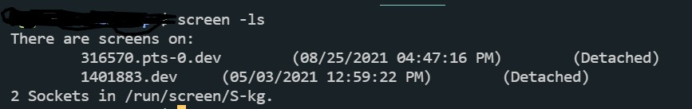

1 Подключаемся по SSH к серву stage (ip 159.69.88.50)
2 в терминале вводим screen -ls для того чтобы увидеть статус скрина.
Важно то, что статус скрина - (Detached), это значит что к скрину никто не присоединен.
Что бы подключиться к скрину вводим команду screen -r dev
3 если серв упал в скрине жмем клавишу вверх и ищем команду FIREBALL_DATA_DIR... после чего вводим команду npm run dev